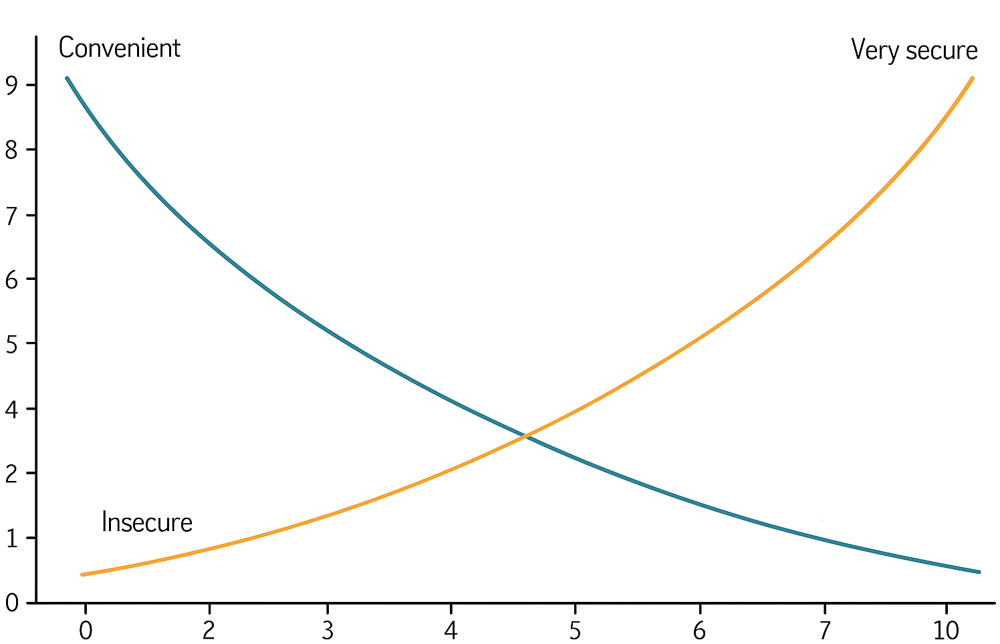

.jpeg)
Why 2FA still matters in 2025
Two-factor authentication is more than a buzzword. Here's why it's your first line of defence, and how to implement it everywhere.
Gone are the days where you were able to use the same, simple, one word, password for all your accounts. With more and more stuff being connected to the internet every single day, your accounts can be accessed from pretty much anywhere, at any time. Great convenience for you, but also anyone else with an internet connection.
I won't go into too much detail about passwords because there is another blog in the works for that subject.
Strong Passwords: Myths & Realities
But you get the picture, if they can crack your password, they can log into your account. It's that simple. This is where 2FA is so crucial to safeguarding your account, even if your password is a single character. If the hacker, attempts to login to my account using the correct username and password, they would be met with a prompt to enter what's called a “2FA code”. This then verifies that whoever is signing in, 1 has access to the login credentials AND 2 has access to the 2FA rolling code in the Microsoft authenticator application (usually meaning has access to your phone, which is then again, usually behind various types of authentication factors). Pretty secure right.
How is this code generated, well there are two main ways to set this up. Either install the Microsoft authenticator from the App store on your phone or use a password manager. While the former is free, I personally use a paid password manager to manage not just my 2FA codes but my passwords, logins, passphrases, recovery codes, notes etc. You'll essentially link a login with a time-based one-time passcode (TOTP) generated by the application you have just opted for. The code lasts between 30-60 seconds and then once that time is up, another is generated, and so on.
I won't show you here exactly how to set it up as there are already too many guides online as it is!
This technology is, in my humble opinion, the best, most efficient, and least expensive way to safeguard your account. It doesn't make it “un-hackable”, but it is now not the lowest hanging fruit. And in today's world, that is usually enough to frustrate hackers in to moving on to an easier target.
There are actually 5 main types/factors of authentication and nowadays they may even be being used to secure your accounts without you even knowing. Let's see if you can spot where these are being used in secure applications you are interacting with.
1. Knowledge Factors ("Something You Know")
Credentials based on information only the user should know.
Passwords (text-based, alphanumeric)
PINs (Personal Identification Numbers, usually 4-6 digits)
Security Questions (e.g., "What was your first pet's name?")
Patterns/Gestures (e.g., Android unlock patterns)
Weaknesses:
Vulnerable to phishing, brute-force attacks, and credential stuffing.
Users often reuse or choose weak passwords.
2. Possession Factors ("Something You Have")
Requires physical or virtual access to a device or token.
Physical Devices:
Hardware Tokens (e.g., YubiKey, RSA SecurID)
Smart Cards (e.g., CAC/PIV cards for government/military)
USB Security Keys (FIDO2/U2F)
Virtual/Logical Possession:
SMS/Email Codes (less secure due to interception risks)
Push Notifications (e.g., Duo Security, Microsoft Authenticator)
Software Tokens (TOTP apps e.g., Microsoft Authenticator or a password manager) - most commonly used 2FA method.
Weaknesses:
SIM swapping (for SMS).
Physical tokens can be lost/stolen.
3. Inherence Factors ("Something You Are")
Biometric traits unique to the individual.
Fingerprint Scans (e.g., Touch ID)
Facial Recognition (e.g., Face ID, Windows Hello)
Iris/Retina Scans (high-security environments)
Voice Recognition
Behavioural Biometrics (keystroke dynamics, mouse movements)
Weaknesses:
False positives/negatives (e.g., twins fooling Face ID).
Biometric data cannot be "reset" if compromised.
4. Location Factors ("Somewhere You Are")
Uses geolocation or IP-based verification.
GPS Coordinates (e.g., "Block logins from outside the UK")
IP Address Whitelisting (corporate VPNs)
Wi-Fi/Cell Tower Triangulation
Weaknesses:
VPNs can spoof location.
GPS signals can be jammed/spoofed.
5. Behaviour Factors ("Something You Do")
Analyses patterns in user behaviour.
Keystroke Dynamics (typing speed, rhythm)
Mouse Movement Analysis
Gesture-Based Auth (e.g., signing a touchscreen)
Transaction Profiling (e.g., banking systems flagging unusual purchases)
Weaknesses:
Requires machine learning/models that may produce false flags.
Behaviour can change due to stress, injury, or new devices.
The below image illustrates what the trade off is when securing any account with more than 1 factor of authentication.
